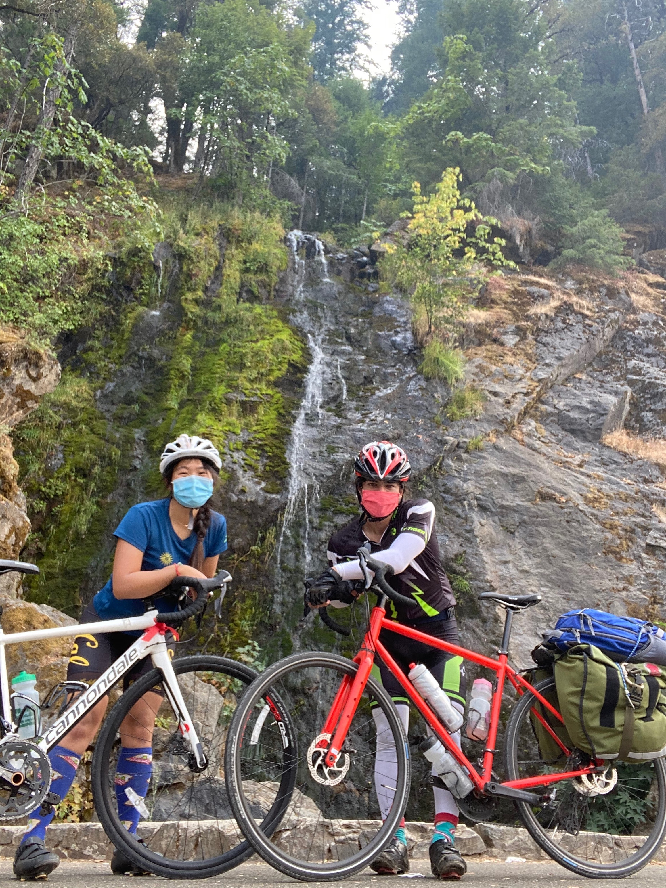

Dear Diary,
The entire ride was in +100 AQI. Challenging my body with small particulates will force my body to adapt into a higher being. Darwin said so himself. By exposing myself to substances that would be normally carcinogenic to a regular, plebian human, I will gain immunity to all potentially hazardous situations. This is a good philosophy not only for improving the body's physical limits, but also for situations involving criminals and women.
The first 30 miles through Sacramento were beutiful and as flat as the second derivative of a parabola.
At the 30 mile mark that all changed when Rachel joined. It provided sandwiches and an extra 10 pounds of weight.

